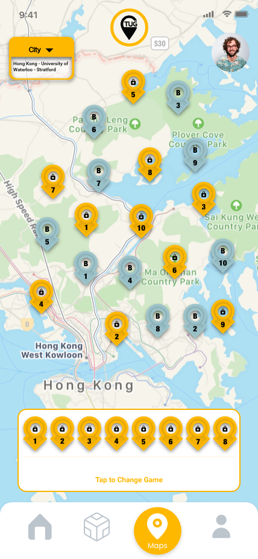
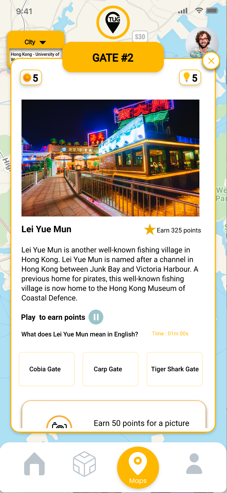
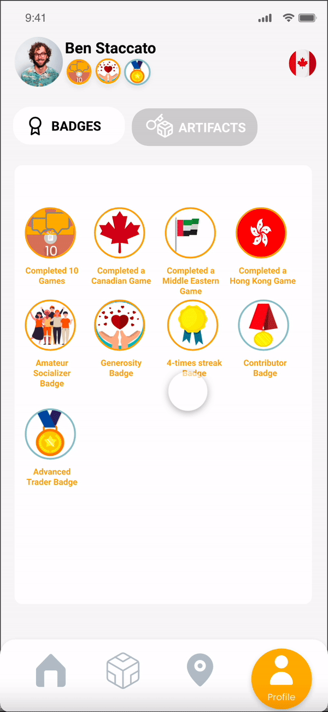
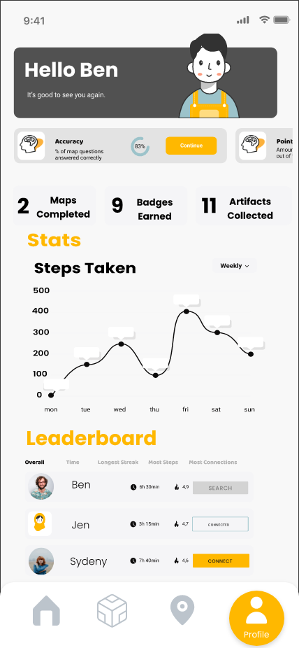
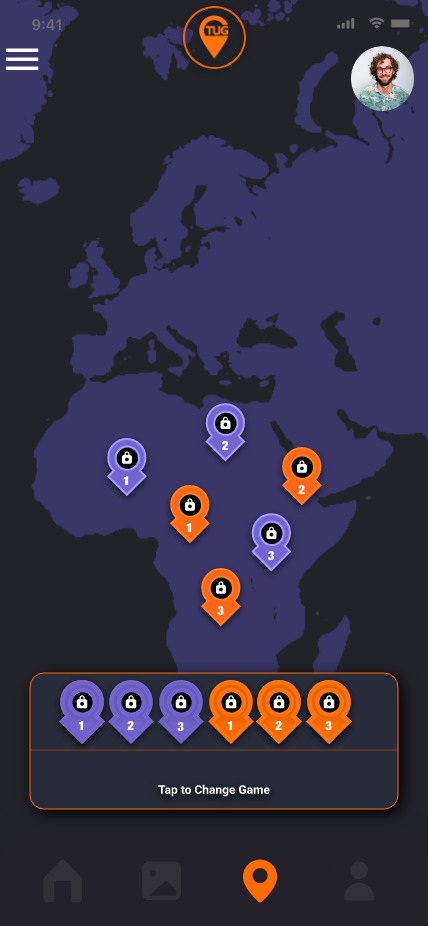

Map Selection
Select from a variety of game-related maps, based on country to enrich your knowledge about a particular area.

Gameboard
Complete all the locations (pin-points) on a map to complete a gameboard.

Answer Questions
Go to each location, answer some questions, earn some badges, and enrich your knowledge, as you go to each location.

Badges
Earn badges and see your badges in your dashboard.

Artifacts
Collect Artifacts throughout the course of the game, trade with other users, combine artifacts to create secondary artifacts, and collect them all.
Profile
View all of your achievements from the amount of badges & artifacts you have, to steps counted, and your place on the leaderboard.

Secret Maps
Unlock secret maps throughout the course of the game and play them to earn unlockables, as well as in-game rewards.
